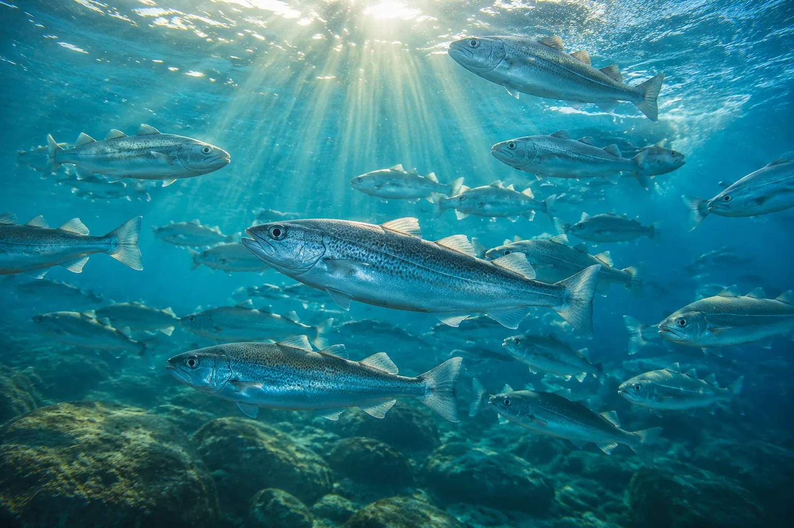

Les oméga‑3, expliqués.
Ce que dit la science sur les oméga-3, expliqué simplement, et comment bien les choisir.
Oméga-3 et santé cardiaque : ce que montrent les études
Allégations autorisées par l'EFSA, fréquence cardiaque, chirurgie cardiaque : un point documenté sur les données cardiovasculaires.
Lire l'articleLe DHA, pilier du système nerveux
Allégation EFSA sur le cerveau, cohorte de Framingham : ce que la recherche établit sur les fonctions cognitives.
Lire l'article
Inflammation, peau et immunité : où en est la recherche
Un champ prometteur mais encore exploratoire, présenté honnêtement, avec le point ferme sur la vision.
Lire l'articleLa science des oméga‑3, système par système
Le dossier documenté : allégations autorisées par l'EFSA, résultats d'études et sources, du système nerveux à la vision.
Les repères pour choisir son huile.
Savoir où vous en êtes, avant de compléter.
Le test oméga-3 se fait chez vous : une goutte de sang, analysée par un laboratoire indépendant. Vous connaissez votre rapport oméga-6 / oméga-3, puis un second test montre ce qui a changé.